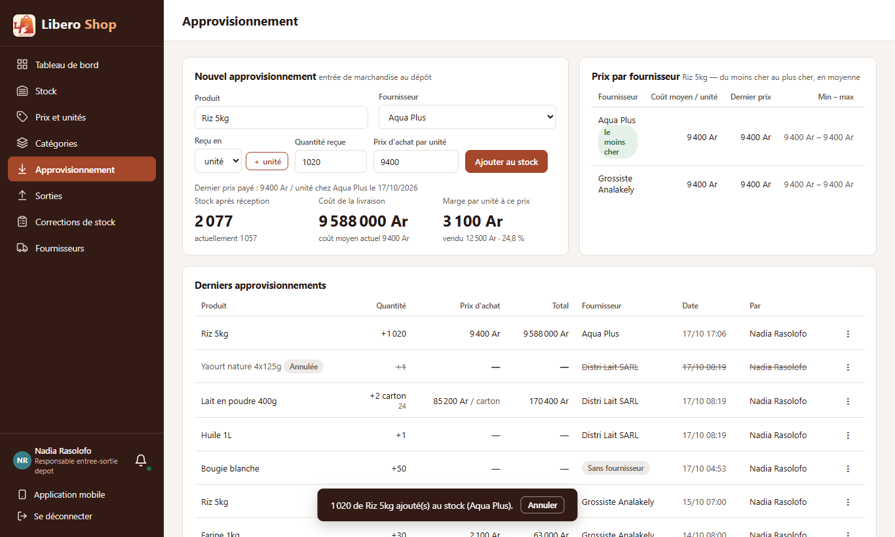
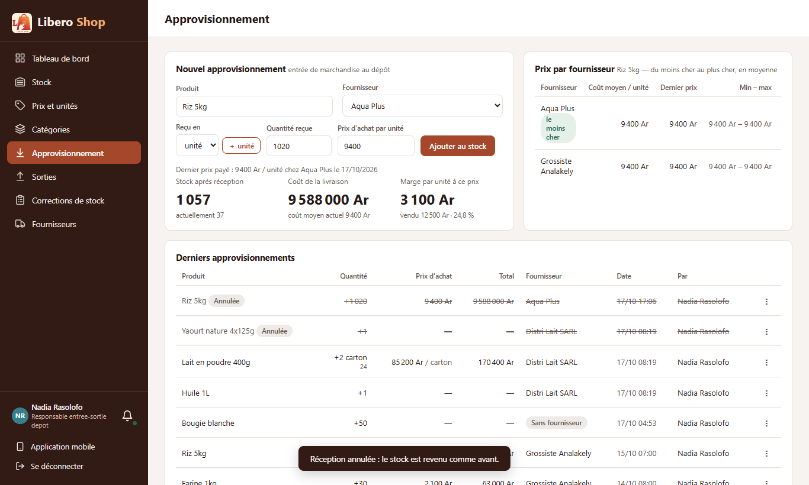

← Tous les comptes rendus de l'interface
UI-83« Annuler » dans le message
- Après une réception ou une correction de stock, le message du bas garde un bouton « Annuler » pendant 7 secondes.
- « Annuler » écrit le mouvement inverse, comme le « ⋮ » d'une réception passée : rien n'est effacé, l'historique montre les deux.
- Un bon de livraison de plusieurs produits s'annule en une fois, tout ou rien (nouveau côté serveur).
- Si une partie de la marchandise est déjà vendue, l'annulation est refusée avec le message habituel.
- Partout où l'on reçoit ou corrige : page Approvisionnement, Corrections, fenêtre « Réception », « Ajouter du stock » et « Corriger le stock » du menu produit.
1. Le problème
Une faute de frappe (« 200 » au lieu de « 20 ») se remarque juste après avoir validé. Pour la rattraper, il fallait retrouver la ligne dans la liste des réceptions et passer par son « ⋮ ». Le message qui confirme l'opération est pourtant déjà sous les yeux.
2. Ce qui a été fait
Un seul service, StockUndo, ajoute le bouton au message et appelle la bonne annulation : une réception,
un bon entier ou une correction. Les listes de réceptions et de corrections se rechargent d'elles-mêmes après
l'annulation ; le stock affiché partout suit par les mises à jour en direct.
Côté serveur, POST /api/stock/deliveries/cancel annule toutes les réceptions d'un bon dans une seule
transaction : si une ligne est refusée, aucune n'est annulée.
3. Le résultat en images
Nadia — responsable de dépôt


4. Tableau récapitulatif
| Fichier | Changement |
|---|---|
backend/…/service/MovementCancellationService.java | cancelDelivery : un bon entier, tout ou rien |
backend/…/web/StockController.java, web/dto/CancelDeliveryRequest.java | nouvelle adresse POST /api/stock/deliveries/cancel |
ui/…/core/stock/stock-undo.ts | nouveau : message avec « Annuler » |
ui/…/core/api/stock.api.ts | cancelDelivery |
supply.component.ts, stock-adjustments.component.ts, delivery-dialog, stock-entry-dialog, stock-adjust-dialog | message avec « Annuler » ; listes rechargées après annulation |
| Règle | Test |
|---|---|
| Un bon annulé en entier ou pas du tout | MovementCancellationServiceTest.bonDeLivraisonAnnuleEnEntierOuPas |
| « Annuler » d'une réception écrit la réception inverse et prévient les listes | stock-undo.spec.ts |
| Un bon de plusieurs produits passe par l'annulation du bon entier | |
| « Annuler » d'une correction écrit la correction inverse |
Tests : serveur au vert (622 tests), interface au vert (290 tests).